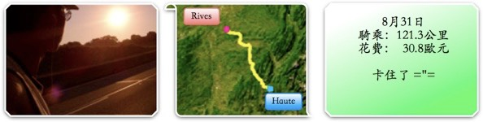
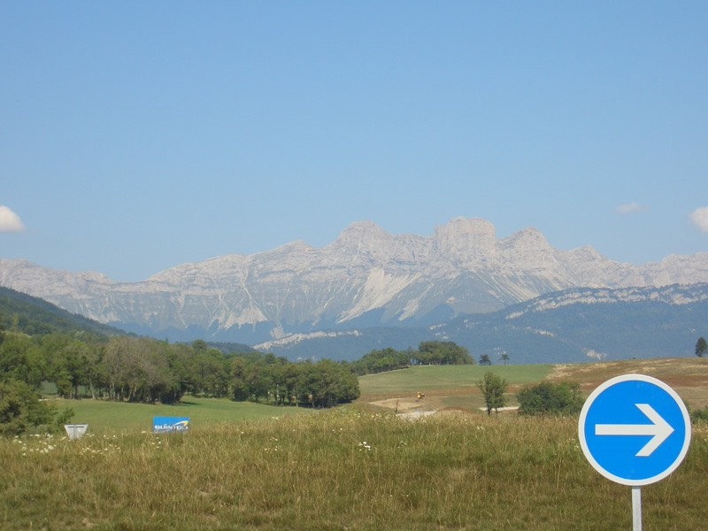
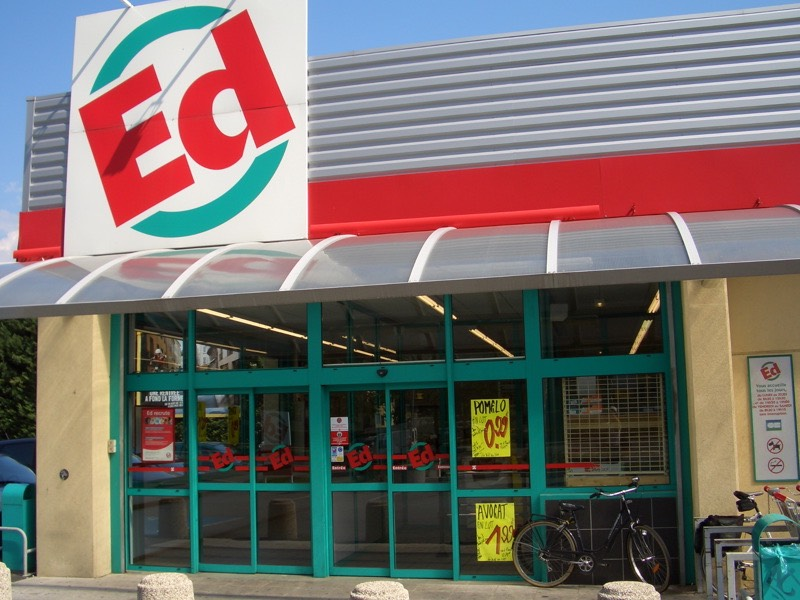
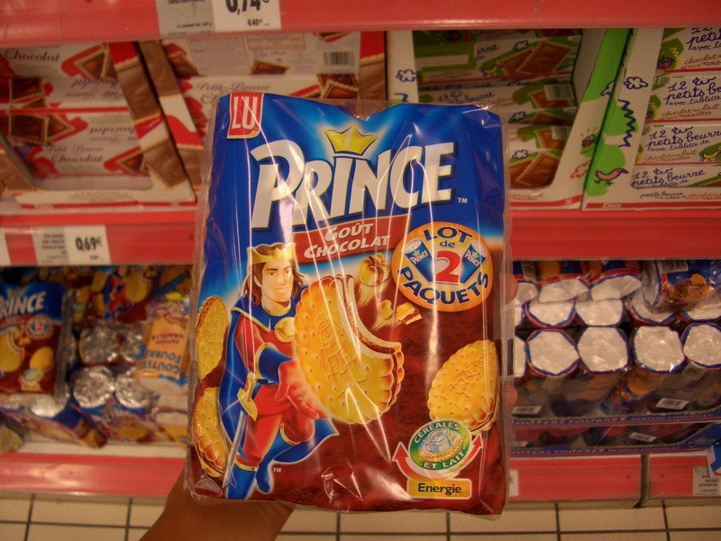
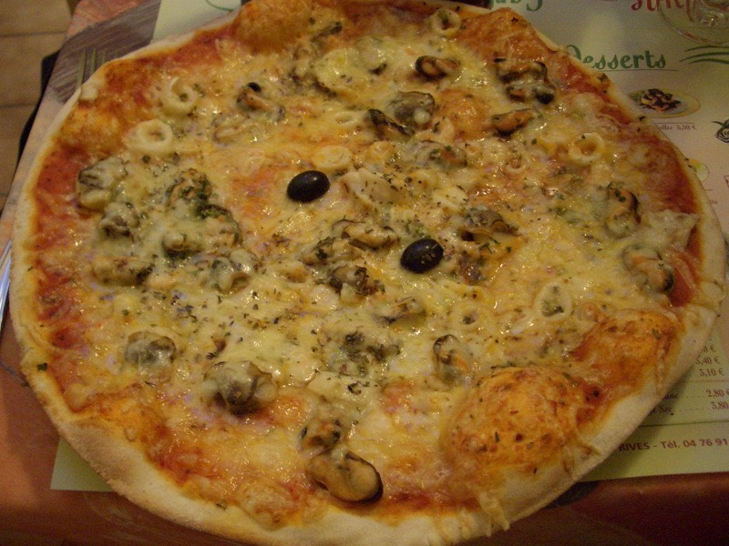

山裡的夜晚真的冷的叫人直打哆嗦，半夜不知為什麼突然醒來，原來是把棉被踢到床下而冷醒了。
白天熱的要命，晚上卻又冷到不行，日夜溫差起碼有20度。
維持早起的好習慣，八點多下樓吃早餐，柳橙汁＆美麗的餐巾紙（吃完飯後就收到包包去了）。
牛角麵包、法國麵包、果醬、奶油
還有一壺熱巧克力（兩杯多一點），4歐元。
極度悠哉的吃完早飯，真是不簡單的小旅館，餐廳+旅館+飯店+香煙鋪，幾乎包括了整個小鎮日常生活所需的物資。
吃飽喝足才回樓上收拾行李，看到床很想再睡一下 @@" 真是謎樣的魅力
十點整離開旅館，回頭看看這座山中的小小鎮。
繼續騎昨天沒騎完的N75往GRENOBLE前進，估計下午三點左右可以抵達。
騎沒多遠到坡頂之後，真是壯闊的山勢呀∼駐足看了好久。

山頂那白色綿延的岩壁，彷彿是天然的萬里長城一樣。
連路標都是純石頭雕刻的
靠近一點看那天然的萬里長城
拍一段山路，如果在頭頂裝一台攝影機全程記錄的話，一定會相當的無趣 = =
觀察了一下，上面好像是火車跑的鐵軌，搭這班火車景色一定超讚！
每棵樹都綠意盎然，怎麼這棵枯得如此徹底？
蓋到一半的橋，兩邊都是已經挖通的隧道，也是頗浩大的工程。
早上騎的算是蠻輕鬆，因為一開始就爬到坡頂，所以只要一邊看風景，一路順著滑下來就好。
台灣的北宜公路也有差不多的景色。
比較辛苦的大概是太陽真的超炙熱。隨著時間逼近中午，溫度直線上升，汗流個不停。
之前擔心貨架會再度斷掉，所以就不多裝1.5公斤的水瓶在包包裡增加重量。
現在包包自己背，重也是重到自己而已，累一點比渴死好，所以現在又有充沛的水量供應了。
沒事就喝水，趕快喝光也可以減輕包包的重量。
下午一點，躲在VIF城鎮的陰影下上網兼休息到兩點，越來越熱，相當恐怖的天氣。
依照皮膚受熱的情形來估計，溫度約在35度以上，這樣的情形會一直持續到下午六點過後才開始降溫。
下午兩點半，真的快被曬成人乾了，有餐館就躲進去休息一下，順便吃午餐。
剛騎過去，人還沒下車，狗又衝了過來，我真的以為牠會一口把我咬下去，因為牠看起來表情沒那麼無辜。

店裡的招牌狗，每個客人進來都會摸摸牠的頭，牠也很享受的一直轉檯給不同的客人摸。
看到有人在吃東西，『我也要吃這個』，的點菜方式再度登場。
點到一盤：五穀雜糧米飯+蒸蛋作成的豆腐+干貝、蝦子、蟹條、貝類調味的魚肉漢堡。
魚肉漢堡配上佐料相當好吃，米飯的口感很有深度，不曉得那些是什麼樣的穀物。
店裡供應的冰開水，更是極品中的極品，喝的都不想上路了，太陽怎麼這麼樣的大呀 /_\
有錢跟沒錢的差別在於，有錢的時候，都是先吃東西再問價錢，美味的一餐，7.5歐元
再躲也躲不了多久，出發吧∼騎沒半小時，又快不行了，繼續躲太陽，這次躲到ED超級市場。

我很討厭逛街、逛百貨公司之類的地方，但是逛超市則會很高興，因為可以買很多買的起的實用（食用）東西。
每次都會想隨便買點什麼都好吧∼
但到底要買什麼東西好呢？
站在琳琅滿目的物品前面，很難下決定。
這次買了兩包裝在一起的小王子牌巧克力餅乾，2.41歐元，可以當成備用乾糧慢慢吃。

結帳前又拿了一盒三枝入的巧克力脆皮花生碎片香草冰淇淋，0.95歐元。
一隻不到台幣15元，總算有價錢正常一點的冰棒了，之前曾吃了一根台幣80元的MIKO牌冰淇淋。
趕在冰棒融化前，一口氣吃掉了三根，吃完的那一瞬間，G城到了。
很大很大的地方，一下子從山裡又回到了城市，現在所在地算是隆河谷地，大城還挺多的。
有點懶惰的想就住在這裡算了，看看里程表騎了還不到80公里，可是看到太陽就很懶得動。
又躲在這裡上網打發時間，上網時間拖的太長的話，感覺好像回到台灣一樣。
關掉iBook的瞬間，一度會忘了自己人其實在法國，會有一種說不太上來的感受。
像是做夢剛醒過來的時候，還分不太清楚自己在夢裡還是在現實。
G城有纜車可以搭唷∼不知道能搭到多高的地方？
還有流動式的馬戲團（應該比較像是動物園），搭個超大的帳篷收門票前即可參觀。
看海報上畫的，並不是多了不起的動物，就老虎、斑馬、鸚鵡這一類。
下午五點，打算離開G城，直接往里昂（LYON）的方向騎去，當然今天內不可能騎到，所以騎多少算多少。
底下就是火車站，好想偷懶搭火車去里昂，或是再偷懶一點搭到史特拉斯堡，然後往西邊騎回巴黎就結束了。
現在的心情跟當初環島騎到高雄的時候有點像，覺得有趣的地方已經騎完了（台灣東部），所以提不太起勁來。
可能又到了公休時間了 = ="
當是被太陽晒昏頭了，繼續騎吧，帽子又不是買假的，嫌熱就戴起來咩∼
搭便車分兩種，一種是比個大拇指，另一種會把想去的目的地寫在牌子上，兩種都要苦苦等有緣人來載。
走單車專用道居然繞到了高速公路底下，混濁的河水，跟山裡看到的實在差太多了。
亂繞亂繞看到可以走的N532，路上會經過不少小鎮，有旅館就住吧，青菜都好啦。
與其說是山，感覺更像是超大顆的石頭。
轉N85往里昂方向騎，沿路經過的四個還是五個小鎮，竟然都沒有半間旅館？
晚上七點，還是熱的受不了，巴不得太陽快點下山，但是下山的話又要摸黑騎車，兩難。
總算看到民宿的牌子，雖然覺得這樣的路可以通到民宿嗎？騎車要怎麼開上來呢？
結果還真的有一間，有時候，會不會住在這間旅館，只要到了門口就會有點感覺，算是第六感之類的吧。
總覺得今晚大概就是在這邊過夜了，感覺很好價錢又很便宜的民宿，那遊記標題就是『晒個屁∼！』之類的。
民宿有營業，電鈴就是在入口處掛一個小鈴鐺，用手拉了一下，『噹∼！』的聲音真是響亮到不行。
『你好∼？』聲音從二樓窗戶傳來個感覺很慈祥的老太太。
『妳好，請問一下，有沒有房間呢？』今天大概就是住這了，八九不離十，準備去洗澡吧。
『客滿唷∼』
客滿唷∼客滿唷∼客滿唷∼客滿唷∼客滿唷∼客滿唷∼客滿唷∼客滿唷∼客滿唷∼客滿唷∼客滿唷∼
在耳邊繚繞著。
客滿！？沒搞錯吧？是連松鼠、猴子那一類的都來住宿所以客滿嗎？明明就很冷清的感覺呀。
沒辦法，沿著N85繼續往下騎吧，命呀∼命呀！
逆著陽光，飛舞的蒲公英種子看得特別清楚，很美麗呢。
邊騎車邊張口『哇∼∼』的嘆讚而過，然後就吃到了兩顆種子，呸∼！呸∼！
又到一個叫RIVES的小鎮，繼續發揮第六感，名字這麼好聽的城鎮，一定就是今晚的落腳處了。
從入鎮到出鎮，大約五分鐘，鎮上有麵包店、餐廳、酒吧、花店、書店、牙醫、公園、肉鋪.....就是沒有旅館。
其實也不是多大的鎮，沒旅館也是應該的，八點了，好累，不找了，今天想吃披薩，所以到有賣披薩的地方。
盯著法文菜單，披薩就有十幾種口味，想吃海鮮總匯，不允許有點錯的可能性。
就這麼剛好，女服務生不會講英文，連一句都不會。
請問要怎麼比手畫腳才能準確的表現出『海鮮總匯披薩』呢？
頒個金馬獎之類的給我吧，成功點到了 :D （其實在端上來之前，一點信心都沒有）
本來還想點一份沙拉，但服務生阻止我，說披薩很大一個，夠我吃了。
一個人吃掉了一整個披薩（7.7歐元），喝掉兩瓶玻璃罐裝的可樂（2.7歐元）。

甜點繼續吃華麗的香蕉船冰淇淋（5.5歐元）。
這是一家餐廳＆酒吧合開的地方，透過客人幫忙翻譯，得知營業到凌晨一點。
所以在這之前，可以有個地方坐著整理遊記（店裡還有插頭能充iBook＆iPod的電）。
有洗手台可以擦一下身體洗把臉，當然廁所是少不了的，今天真的有夠熱的。
晚上騎車應該會涼快很多，可是天黑後什麼都看不見，而且往前騎也沒有旅館了。
就在酒吧混到一點後再找個公園椅子瞇一下吧，小小鎮治安比較寧靜，又省下了住宿費，換來吃大餐，其實也挺好的。
台灣的親友，露宿真的沒那麼嚴重，環島的時候更加淒慘呀，而且既然還能上網傳遊記，就表示一切過的很好。
如果要報喜不報憂的話，大可說謊，隨便拍張旅館的照片就說今天住這裡，但這樣也沒什麼意思。
我會好好照顧自己，雖然很難讓你們放心，但請相信法國的治安比台灣好很多，環島都平安回來了，環法只是小意思。